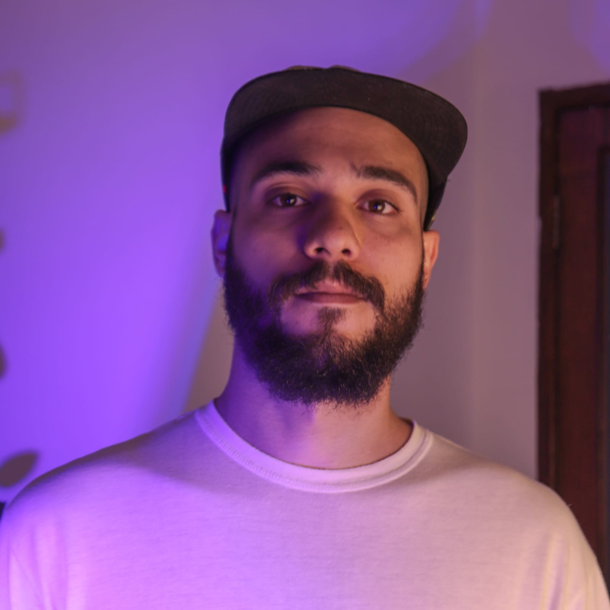

Página criada para a disciplina de Programação Front End, da Universidade de Vila Velha,
com o intuito de falar sobre o universo da música, partindo do ponto de vista de um cantor/compositor
Aqui você encontra um pouco sobre a minha história na música,
letras de algumas composições próprias, links do spotify e vídeos de apresentações e gravações que participei